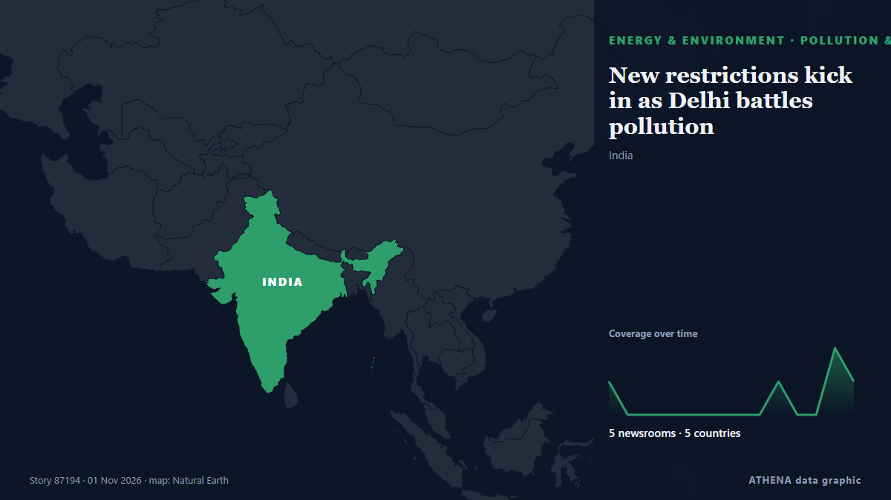

Énergie, ressources et environnement
Les titres sont affichés en anglais, tels que publiés.

Pollution et biodiversitéNew restrictions kick in as Delhi battles pollution
Authorities in New Delhi stepped up anti-pollution measures on Sunday, including higher parking fees and work-from-home orders, seeking to curb toxic smog in one of the world's mo... de Oman Observer
| 19 oct. | 50 |
|---|---|
| 20 oct. | 25 |
| 21 oct. | 57 |
| 22 oct. | 84 |
| 23 oct. | 65 |
| 24 oct. | 38 |
| 25 oct. | 69 |
| 26 oct. | 78 |
| 27 oct. | 111 |
| 28 oct. | 84 |
| 29 oct. | 71 |
| 30 oct. | 77 |
| 31 oct. | 26 |
| 1 nov. | 12 |
Pakistan becomes chair of G-24 bloc of developing nations, reaffirms pledge to fairer global financial system
Pakistan assumed the chairmanship of the Group of 24 (G-24) on Sunday, with Finance Minister Muhammad Aurangzeb expressing the country’s resolve to strengthen the collective voice of developing… de Dawn
Russia says drone hit 'industrial enterprise' near Moscow, Kyiv claims hit major refinery
Russia announced that a drone hit an industrial area near Moscow, while Ukraine claimed responsibility for targeting a major refinery in the region. de Arab News
Russian forces strike Zaporizhzhia region 699 times in past 24 hours, six injured
Russian troops launched 699 attacks on 55 settlements in the Zaporizhzhia region over the past 24 hours. de Ukrinform (English)
Vietnam cuts gasoline tax to zero, prices fall from November 1
Vietnam has cut the special consumption tax on all types of gasoline to zero from November 1, 2026, bringing down retail gasoline prices as the government seeks to ease costs and curb inflation. de Tuoi Tre News
For M’sian runners, Jakarta is as much about friendship as the finish line
Members of the Haze Runners Club recently travelled to the Indonesian capital for a weekend filled with big crowds and a very different running atmosphere. de Free Malaysia Today
5.2-magnitude quake hits Vanuatu Islands -- GFZ
SYDNEY, Australia (AFP)—A 7.2 magnitude earthquake off Vanuatu triggered a tsunami warning on Saturday, the Pacific Tsunami Warning Centre said. de Jamaica Observer
Greece Issues Severe Weather Warning for Heavy Rain, Thunderstorms and Hail
Greece’s national weather service has issued an extraordinary bulletin warning of heavy rain and thunderstorms across much of the country on Sunday, November 1, and Monday, November 2, with a chance… de Greek Reporter
Ghana opens talks with Russia to build its first nuclear power plant
By Nana Karikari, Senior Global Affairs Correspondent Ghana has opened preliminary talks with Russia’s state-owned nuclear corporation Rosatom to construct its first nuclear power station. de GBC Ghana Online
Iran ready to join three initiatives at COP17 on biodiversity conservation
Tehran, IRNA – Iran has expressed readiness to join three initiatives launched at the proposal of the presidency of the 17th Conference of the Parties to the Convention on Biological Diversity (CBD… de IRNA (English)
Philippines raises alert level at Mayon volcano after eruption
Residents in Albay province heard a loud boom around noon on Friday (Oct. de Gulf News
Albufeira announces embargo on desalination plant
Albufeira City Council claims to have embargoed works on the locally-contested desalination plant. de Portugal Resident
Storm Boelo to bring severe winds and rain across Ireland
Storm Boelo is forecast to bring severe wind and rain to the south, southwest and north today, with Status Orange weather alerts in place for a number of counties. de RTÉ News
Indonesia: nine orangutans rescued from wildfires return to the forest
Nine orangutans rescued from devastating wildfires in Indonesian Borneo have returned to the forest after weeks of rehabilitation. de Euronews English
COP17 | Jiangsu Showcases Biodiversity Conservation in Action
Media OutReach Newswire – 29 October 2026 – Jiangsu Day, a themed event at the China Pavilion during the 17th meeting of the Conference of the Parties to the Convention on Biological Diversity… de Laotian Times
Azerbaijani oil surges past $126 per barrel as Iran tensions drive global prices higher
The price of Azerbaijan's Azeri Light crude oil has climbed to $126.16 per barrel in the European market, rising by $3.88, or 3.2%, amid renewed concerns over potential US military strikes against… de AzerNews
Brent crude oil price rises
Oil prices experienced a decline of over 1% after hitting six-month peaks, primarily due to geopolitical unrest in Saudi Arabia. de Times of India
UAE brings oil tanker leak under control, coastal cleanup continues
DUBAI: The UAE has brought an oil tanker leak under control, with no new leakage detected, as environmental cleanup operations continued along coastlines affected by the spill, the Emirates News… de Arab News
Infected hay bales to be buried in a safe location
Hay bales contaminated with the food and mouth virus (FMD) that were intended to be buried in Troulli will be moved to another safe location so as not to affect livestock units in the adjacent areas… de Cyprus Mail
Fire pollution killed 3,560 people in Indonesia in September
JAKARTA: Air pollution from smoke emitted by months of wildfires across Indonesia caused an estimated 3,560 deaths in the vast Southeast Asian archipelago in September alone, according to a… de New Straits Times
Damen signs deal with Lithuanian Navy for SAR vessel
Damen Shipyards Group has signed a contract to build a pollution incident response and search and rescue (SAR) vessel for the Lithuanian Navy.... de Naval Today
For many, striped bass fishing is a way of life. But the iconic species could face collapse
Striped bass fishing has been Bill Jakob's passion for more than 60 years, and he remembers an era when he'd spend all night casting his line into the crashing waves off Montauk and get eight or nine… de Phys.org
India’s animal centre vows reset after criticism
JAMNAGAR: Behind guarded gates resembling a maharajah’s palace are hundreds of elephants and big cats, giraffes grazing in a mock savannah, and chimpanzees and orangutans swinging from ropes. de Dawn
Tankers defy sharp escalation of Iranian attacks to keep crude oil flowing through Strait of Hormuz
Soaring freight rates are giving tankers a big financial incentive to run the gauntlet through the Strait of Hormuz. de CNBC World
Bhutan glacial lake outburst triggers flood
Bengal forest minister Manoj Oraon issued a warning to residents near the Sankosh river. de Times of India
UAE petrol prices set to change in November after fuel costs surge nearly 80% in 2026
UAE petrol prices for November 2026 are due to be announced after increases of up to 80% since January. de Arabian Business
Syria flash floods kill at least 5, force hundreds of families from camps
Heavy rain and flash floods left five people dead, including four children, and forced some 375 families to flee displacement camps in Syria’s Raqqa province. de Al-Monitor
Britain bars entry to Swedish academic ahead of appearance with Palestine Action founder
LONDON, Oct 30 - Swedish climate academic Andreas Malm said on Friday he had been denied entry to Britain, where he was due to speak alongside the co-founder of Palestine Action, a group banned as a… de The Straits Times
ST LNG Project Offshore Texas Clears Key Regulatory Hurdle
QatarEnergy has developed a new strategy to further build its global LNG portfolio with long-term offtake from other suppliers to generate revenue if exports are disrupted in the Strait of Hormuz in… de Natural Gas Intelligence
Rising utility bills wiping out workers’ pay gains – Minority
The Minority in Parliament says rising electricity and water bills are wiping out public sector workers’ salary gains. de MyJoyOnline
New Jersey governor threatens to block Russian diesel shipments to US
Mikie Sherrill said US President Donald Trump is not doing anything to lower gasoline and diesel prices. de TASS (English)
US oil giants report profit surge again on Iran war
The surge in US petroleum earnings comes on the heels of similar increases at European companies as the US-Israeli war on Iran drags on. de The New Arab
Bodies Discovered After Rig Sinks Offshore Gabon
'An underwater remotely operated vehicle has located the bodies of three individuals', Borr Drilling revealed. de Rigzone
US touts role in Gulf oil exports as CENTCOM chief flies over Hormuz Strait
LONDON: The chief of US Central Command, Brad Cooper, flew over the Strait of Hormuz in a CH-47 Chinook helicopter on Sunday as the command said US forces had helped Gulf partners export more than… de Arab News
Current price of oil as of October 30, 2026
When oil prices change, it affects your energy costs—and even the price of everyday items. de Fortune